У нас есть игра, в которой мы хотим совершить покупку. Сам процесс покупки простым языком можно описать так: мы открываем магазин в нашей игре и выбираем определенный пак, который хотим купить. На сервер уходит информация о желаемой покупке. Сервер эту информацию обрабатывает. Сервер отправляет обартно ответ, в котром содержаться данные о нашей покупке(можно сказать, что сервер отсылает нам нашу покупку). На этом этапе мы перехватываем при помощи Charles данные, которые отправили нам сервер, и подменяем на нужные нам. Если на сервере неправильно настроена валидация данных, то таким образом мы можем заказать, к примеру, 10 монеток, а подменив покупку, получить 9999999 монеток. Именно правильную настройку валидвации на сервере мы и хотим научиться проверять в этой статье.
Собственно Charles https://www.charlesproxy.com/
Charles работает на платформе JAVA, так что возможно вам придется так-же установить(или обновить текущую) версия JVM у себя на компьютере https://www.java.com/ru/download
Коротко о Charles:
Charles Web Debugging Proxy - это HTTP proxy/ монитор/ Reverse Proxy позволяющий пользователю наблюдать за всем HTTP траффиком между его компьютером и сетью Интернет. Это включает в себя запросы (requests), ответы (responses) и HTTP заголовки (содержащие cookies и кэш информацию). Charles отображает весь трафик в виде папок с названием серверов. Внутри каждой папки содержатся запросы, которые отображают происходящие события, связанные с данным сервером. |
Натсройка Charles:
Установите программу следуя инструкциям. Charles - софт платный, временно можно использовать 30-ти дневную пробную версию с определенными ограничениями (уменьшает удобство использования, но не функционал - каждые пол часа программа автоматически выключается.) Легальный способ обойти 30-ти дневное ограничение - использование Charles на виртуальной машине с откатом времени на 30-ть дней назад. Нелегальный способ - скачать пиратскую ломанную версию, чего делать нельзя.
В ходе установки программа предложит поставить плагин для Firefox, в этой статье он нам не понадобиться, но на будущее можно поставить. После установки:
Откройте Charles → Help → Local IP Address...
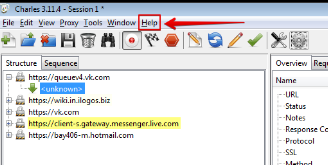
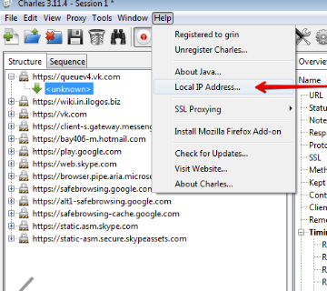
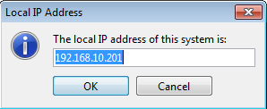
Запомните IP, в моем случае это 192.168.10.201
Далее нужно настроить прокси на девайсе, на котором находится игра. Чтобы все правильно работало, компьютер с которого работает Charles и девайс, на котором вы будете тестировать должны быть в одной локальной сети(не обязательно иметь выход Wi-Fi на компьютере, главное чтобы сеть была та же. Если компьютер и тестовый девайс в одном офисе, то скорее всего сеть у них общая).
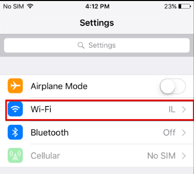
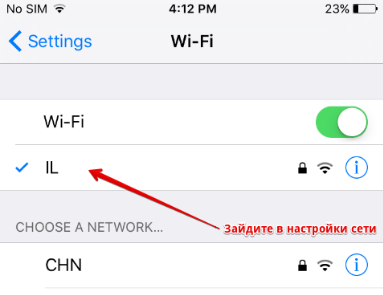
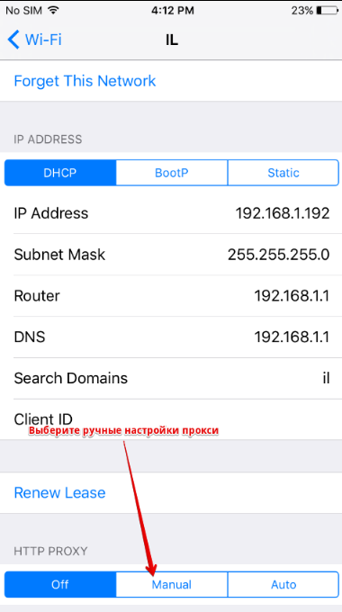
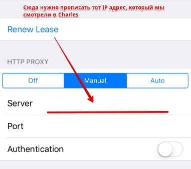
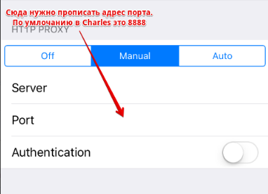
Все, мы настроили наш девайс. Теперь зайдите в тестируемую игру (естественно, Charles при этом должен быть включен). Сейчас наш девайс включен через прокси Charles. Как только какое-то приложение начнет слать данные по сети (скорее всего это будет запущенная вами игра, но может быть и другое приложение на девайсе, которое использует интернет) - в Charles появится запрос на коннект девайса:
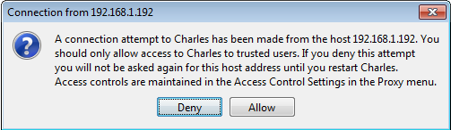
Нажимаем кнопку Allow. С этого момента весь HTTP трафик идет через Charles.
Наше приложение теперь отображается в колонке Structure. В моем случае оно называется "http://vm3srv-stage.ilogos-ua.com" :
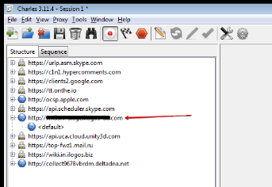
Для того, чтобы данные могли быть перехвачены, нужно активировать возможность Breakpoints для нашего приложения. Для этого нужно нажать правой кнопкой мыши по приложению (http://vm3srv-stage.ilogos-ua.com) и выбрать опцию Breakpoints:
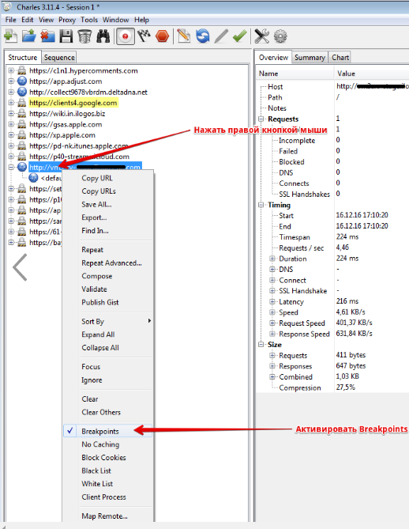
После этого нужно дать понять чарльзу, что мы собираемся перехватывать трафик от приложений, для которых мы активировали эту опцию(на данный момент это только одно приложение, наша игра), по этому нажимаем кнопку Enable Breakpoints:
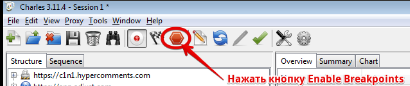
Все, теперь можем делать нашу покупку. Сейчас у меня в игре 0 монет. Я буду покупать пак на 10 монет. На сервер в этот момент отправляются разные запросы (в том числе авторизация пользователя, события DeltaDNA, наш запрос на покупку монет и т.д.). Чарльз перехватывает эти запросы и не пускает их на сервер. Наша задача - разрешить отправку всех запросов на сервер(в том порядке, в котором они отправляются, иначе возникнут конфликты).
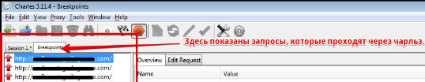
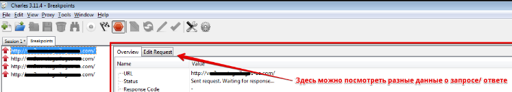
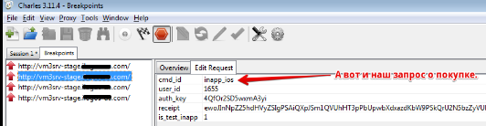
Чтобы выполнить запрос, нужно нажать Execute. Так же можно нажать Abort чтобы не пропустить отправку запроса, но тогда мы ничего не купим (помним, все запросы выполняем сверху по очереди):
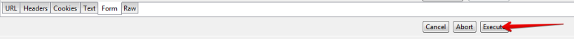
Сервер обработал информацию и отправил нам несколько ответов. Здесь нужно быть аккуратным. Выполняем те ответы, которые не несут в себе информации о нашей покупке.
Когда находим данные о нашей покупке, нужно их подменить:
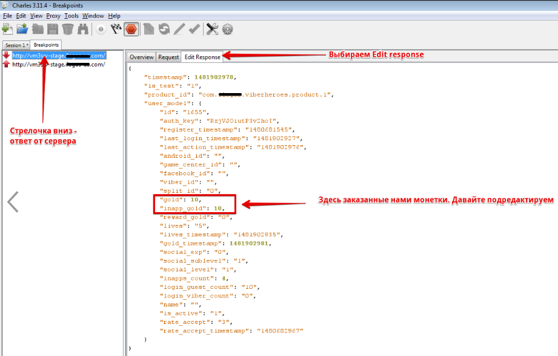
Меняем значение и выполняем запрос:
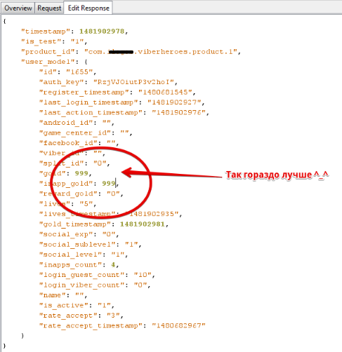
Теперь смотрим на нашу игру. У меня она выглядит так:
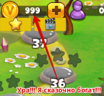
Теперь дело остается за малым - на сервере либо есть валидация, либо ее нет или она неправильно работает. Чтобы это проверить, отключите Charles, или просто выключите кнопку Enable Breakpoints, и перезагрузите игру - если у вас остались ваши хакнутые монеты - валидации нет, если у вас 10 монет(помним, изначально запрос был на 10 монет) - тогда все хорошо, сервер работает правильно. Хотя, монеток конечно жаль.
Кстати, не забудьте перенастроить прокси на девайсе, а иначе не сможете заходить в интернет без Чарльза.
Created with the Personal Edition of HelpNDoc: Easily create Web Help sites